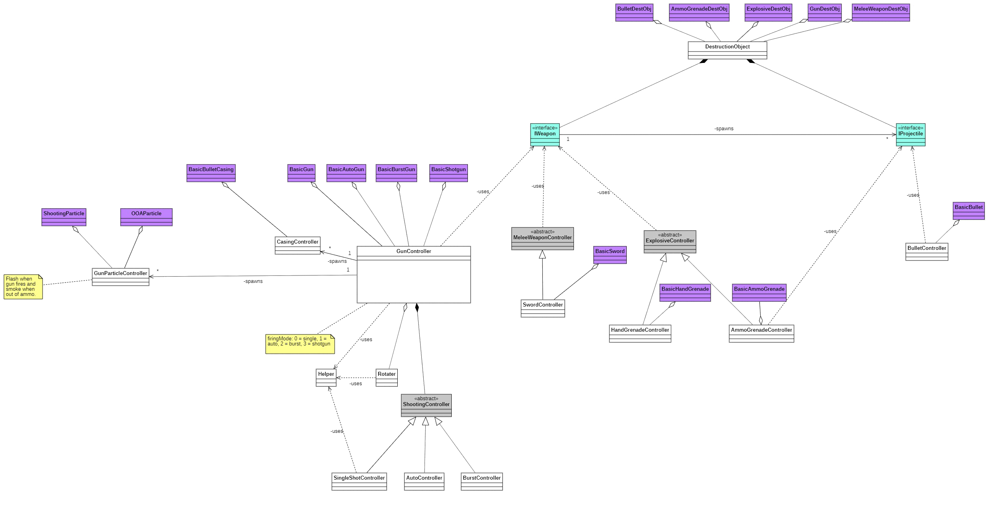

Vilho Polamo
Portfolio
Games
The Last Dawn (2024-present) Site, Source
A visual novel web page made with Next.js. Currently using placeholder art. We wanted to create a visual novel with my friend, so I took the chance to learn a topical web technology. I have learned how to split components into server and client side components using Next.js.
My role: Programmer
Technology: Next.js
Eternal Office (2024-present)
A horror walking simulator made with Unreal Engine 5. I do sound design for the game by creating and searching sounds and programming them using Blueprints and Metasounds.
My role: Sound Designer, Audio Programmer
Technology: Unreal Engine 5
Aberrant: The Offering (2024-present) Source
A survival puzzle horror game made with Unreal Engine 5. Development started in Themed Horror Jam #17, but still ongoing. The game is mostly made by me, but I have found people who participate in story, level design and art.
My role: Team Lead, Programmer, Audio Designer, Game Designer
Technology: Unreal Engine 5
SUPER COOL (2024) Site, Source
A top down retro style game made with Unity for NOKIA 3310 JAM 6. Watch my introduction video below!
My role: Programmer, Sound Designer
Technology: Unity, C#
Hassus (2024) Site, Source
A jam game made with my ex work colleagues from Zaibatsu Interactive.
My role: Programmer, Sound Designer
Technology: Unity, C#
Big Brain Brawl (2022) Site, Source
A global Game Jam game.
My role: Sound Designer
Technology: Unity, C#
Tranquil Lake (2021) Site, Design Document
An unfinished PS1 style horror game that we made in a team of five in Summer of Shivers game jam. This project's Github repository is currently hidden, but you can get permission by asking!
My role: Game Designer
Technology: Unity, C#
Serve and Beep (2020) Download
A 3D local multiplayer game we made with Unity in a team of seven in JYU University's game project course. I was the other programmer in our team and learned A LOT about teamwork and project working along with programming with C# and Unity. I also become familiar with working in sprints and sharing programming task on Trello and using Git and GitHub. This project's Github repository is currently hidden, but you can get permission by asking!
My role: Programmer
Technology: Unity, C#
Hermann's Mansion (2020) Play, Source
My first Unity game that I created from scratch in 48 hours. We had a team that contained a sound creator, a graphician and a person who helped with making maps. I did all the programming and helped everyone else with Unity. You can play the game on browser. Use arrow keys to move and enter to interact.
My role: Programmer
Technology: Unity, C#
Weapon class design (2019)
I designed weapon classes for a game in which there are a lot of different weapons. This is practically how I would start making a clone of a game called Duck Game.
{kind=link}
Find the Way (2019) Play, Source
I learned Godot game engine along with the engine's own language GDScript and made a simple platformer game in 48 hours. Ludum Dare #45 Game Jam's theme was "Start with nothing". You can play the game on browser. Use arrow keys to move.
My role: Programmer, Artist, Sound Designer
Technology: Godot
Other
Poklossi's web page (2024-present) Site
I learned WordPress to update the the web page of Poklossi Oy. The page is still in development.
My role: Web Developer
Technology: WordPress
Portfolio (2020-present) Source
I learned HTML and CSS basics to make a portfolio page for myself. I keep updating the page with new projects.
My role: Web Developer
Technology: HTML, CSS
Google Sites website (2020) Site
I wanted to create a website for my band, so I tried using Google Sites to make it easy for others to edit. It turned out pretty nice!
My role: Web Developer
Technology: Google Sites
Java Spring database tool (2020) Source
A very simple Java Spring Boot database management tool I made by following a tutorial.
My role: Programmer
Technology: Java
Java tag library app (2019) Source
A Java-applet that I created in "Programming 2" -course in JYU university. It represents data-oriented/object-oriented design, where the user can save and delete data in different ways. The UI is made with SceneBuilder and JavaFX.
My role: Programmer
Technology: Java